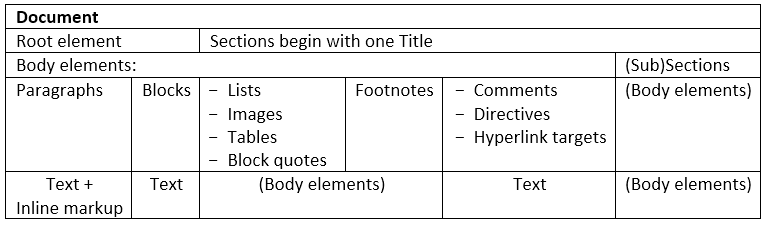

2. Basic rules for working with reStructuredText (reST)¶
2.1. Short Introduction to reStructuredText¶
reStructuredText (reST) is plaintext that uses simple and intuitive constructs to indicate the structure of a document. These constructs are equally easy to read in raw and processed forms.
reStructuredText is applicable to documents of any length, from the very small (such as inline program documentation fragments) to the quite large (this document).
2.2. Syntax Details¶
A reStructuredText document is made up of body elements Below is a diagram of the hierarchy of element types in reStructuredText. Elements may contain other elements below them with recursive or one-to-many relationships: sections may contain (sub)sections, tables contain further body elements, etc. :
2.2.1. Whitespace¶
The presence of whitespaces is of great importance in the reST syntax:
- Blank lines are used to separate paragraphs and other elements. Blank lines may be omitted when the markup makes element separation unambiguous.
- Indentation is used to indicate, and is only significant in indicating:
- multiple body elements within a list item (including nested lists),
- the definition part of a definition list item,
- block quotes, and
- the extent of literal blocks.
Although spaces are recommended for indentation, tabs may also be used. Tabs will be converted to spaces. Tab stops are at every 8th column.
2.2.2. Escaping Mechanism¶
The character set available in plain text documents, 7-bit ASCII, is limited. No matter what characters are used for markup, they will already have multiple meanings in written text. Therefore markup characters will sometimes appear in text without being intended as markup.
Any serious markup system requires an escaping mechanism to override the default meaning of the characters used for the markup. In reST it is used the backslash, commonly used as an escaping character in other domains.
Important
A backslash followed by any character escapes the character. The escaped character represents the character itself, and is prevented from playing a role in any markup interpretation. The backslash is removed from the output. A literal backslash is represented by two backslashes in a row.
There are two contexts in which backslashes have no special meaning: literal blocks and inline literals. In these contexts, a single backslash represents a literal backslash.
2.3. Quick Syntax Overview¶
2.3.1. Sections¶
A reStructuredText document may be structured into sections. Sections contain body elements and/or subsections.
Sections are identified through their titles (with given title style), which are marked up with underlines below the title text (and, in some cases, overlines above the title). An underline/overline is a line of non-alphanumeric characters that begins in column 1 and extends at least as far as the right edge of the title text.
Important
When there an overline is used, the length and character used must match the underline. There may be any number of levels of section titles.
Normally, there are no heading levels assigned to certain characters as the structure is determined from the succession of headings. However, this convention is used for documenting which you may follow:
#####- for parts
*****- with overline, for chapters
=====- for sections
------ for subsections
^^^^^- for subsubsections
""""""- for paragraphs
Of course, it can be used many different marker characters, a deeper nesting level, but keep in mind that most target formats (HTML, LaTeX) have a limited supported nesting depth.
Below are examples of the syntax of different section title styles and how they will be rendered:
| Syntax | Rendering |
===============
Section Title
===============
|
|
Section Title
---------------
|
|
Section Title
^^^^^^^^^^^^^^^
|
|
Section Title
+++++++++++++++
|
|
Section Title
***************
|
|
Section Title
~~~~~~~~~~~~~~~
|
|
Section Title
...............
|
Note
When a title has both an underline and an overline, the title text may be inset, as in the first example above. This is merely aesthetic and not significant. Underline-only title text may not be inset.
Hint
A blank line after a title is optional. All text blocks up to the next title of the same or higher level are included in a section (or subsection, etc.).
Important
All section title styles need not be used, nor must any specific section title style be used. However, a document must be consistent in its use of section titles: once a hierarchy of title styles is established, sections must use that hierarchy.
2.3.2. Paragraphs & Inline markups¶
Paragraphs consist of blocks of left-aligned text with no markup indicating any other body element. Blank lines separate paragraphs from each other and from other body elements.
Paragraphs may contain inline markups.
The syntax for different types of inline markup is as follows:
| Syntax | Rendering |
*emphasis*
|
emphasis |
**strong emphasis**
|
strong emphasis |
`interpreted text`
|
interpreted text |
``inline literals``
|
inline literals |
Subscript text: H\ :sub:`2`\ O
|
Subscript text: H2O |
Superscript text: E = mc\ :sup:`2`
|
Superscript text: E = mc2 |
2.3.3. Lists¶
There are different types of lists:
- Bullet lists
A text block which begins with a ‘-‘, ‘*’, or ‘+’, followed by whitespace, is a bullet list item (a.k.a. ‘unordered’ list item). Below is shown an example of the syntax and the corresponding rendering of a bulet list:
Syntax Rendering
First bullet list item.
First paragraph in the second bullet list item.
Second paragraph in the second bullet list item.
- Sublist
Third item of the main list
This paragraph is not part of the list.
Important
The basic rules for creating a bulet list are as follows:
- The blank line above the first list item is required
- Blank lines between between the same level list items are optional.
- The blank line above the second paragraph in the list is required.
- A sublist is a new list so requires a blank line above and below.
- The blank line below the last item of the bullet list is required.
- Text blocks must be left-aligned, indented relative to the bullet.
- The left edge of the second paragrap in the list lines up with the paragraph above, both indented relative to the bullet.
- The bullet of a sublist lines up with the left edge of the text blocks above.
Here are examples of incorrectly formatted bullet lists:
- This first line is fine. A blank line is required between list items and paragraphs. (Warning) - The following line appears to be a new sublist, but it is not: - This is a paragraph contination, not a sublist (no blank line). - Warnings may be issued by the implementation.
- Enumerated lists
Enumerated lists (a.k.a. ‘ordered’ lists) are similar to bullet lists, but use enumerators instead of bullets. An enumerator consists of an enumeration sequence member and formatting, followed by whitespace. The following enumeration sequences are recognized:
- arabic numerals: 1, 2, 3, … (no upper limit).
- uppercase alphabet characters: A, B, C, …, Z.
- lower-case alphabet characters: a, b, c, …, z.
- uppercase Roman numerals: I, II, III, IV, … (no upper limit).
- lowercase Roman numerals: i, ii, iii, iv, … (no upper limit).
The following formatting types are recognized:
- suffixed with a period: ‘1.’, ‘A.’, ‘a.’, ‘I.’, ‘i.’.
- surrounded by parentheses: ‘(1)’, ‘(A)’, ‘(a)’, ‘(I)’, ‘(i)’.
- suffixed with a right-parenthesis: ‘1)’, ‘A)’, ‘a)’, ‘I)’, ‘i)’.
Enumeration list examples:
Syntax Rendering
- Chapter
- 1.1. Title
1.1.1. Subtitle
- 1.2. Title
- Case
- Case
- Subcase
- Subcase
- Chapter
- Paragraph
- Paragraph
Important
For an enumerated list to be recognized, the following must hold true:
- The list must consist of multiple adjacent list items (2 or more).
- The enumerators must all have the same format and sequence type.
- The enumerators must be in sequence (i.e., ‘1.’, ‘3.’ is not allowed).
- Nested enumerated lists must be created with indentation.
Hint
It is recommended that the enumerator of the first list item be ordinal-1 (‘1’, ‘A’, ‘a’, ‘I’, or ‘i’). Although other start-values will be recognized, they may not be supported by the output format.
The second line of each enumerated list item is checked for validity. This is to prevent ordinary paragraphs from being mistakenly interpreted as list items, when they happen to begin with text identical to enumerators.
If a single-line paragraph begins with text identical to an enumerator (“A.”, “1.”, “(b)”, “I)”, etc.), the first character will have to be escaped in order to have the line parsed as an ordinary paragraph.
- Definition lists
Each definition list item contains a term and a definition. A term is a simple one-line paragraph. A definition is a block indented relative to the term, and may contain multiple paragraphs and other body elements. Blank lines are required before the term and after the definition, but there may be no blank line between a term and a definition:
Syntax Rendering
- Term 1
- Definition 1.
- Term 2
Definition 2, paragraph 1.
Definition 2, paragraph 2.
2.3.4. Blocks¶
Two types of blocks are discussed here:
- Literal blocks
Literal code blocks are introduced by ending a paragraph with the special marker ‘::’.
Syntax Rendering This is normal paragraph. Following is literal text (e.g., source code):
if literal_block: text = 'is left as-is' spaces_and_linebreaks = 'are preserved' markup_processing = None # a literal block continues until # the indentation endsThis is also normal paragraph (not idented text separated with blank line).
When ‘::’ is immediately preceeded by whitespace, both colons will be removed from the output. When text immediately preceeds the ‘::’, one colon will be removed from the output, leaving only one (i.e., ‘::’ will be replaced by ‘:’). When ‘::’ is alone on a line, it will be completely removed from the output; no empty paragraph will remain. In other words, these are all equivalent:
Syntax Rendering
Minimized:
Paragraph:: Literal blockPartly expanded:
Paragraph: :: Literal blockFully expanded:
Paragraph: :: Literal block
Minimized:
Paragraph:
Literal blockPartly expanded:
Paragraph:
Literal blockFully expanded:
Paragraph:
Literal block
- Block quotes
A text block that is indented relative to the preceeding text, without markup indicating it to be a literal block, is a block quote. All markup processing (for body elements and inline markup) continues within the block quote. Blank lines are required before and after a block quote, but these blank lines are not included as part of the block quote.
Syntax:
This is an ordinary paragraph, introducing a block quote: "It is my business to know things. That is my trade." --Sherlock HolmesRendering:
This is an ordinary paragraph, introducing a block quote:
“It is my business to know things. That is my trade.”
– Sherlock Holmes
2.3.5. Tables¶
The description of the tables depends on their complexity and could be done in two main ways:
by using special characters (‘-‘,’=’, ‘|’, and ‘+’) - suitable for simple tables and not so and not so complicated grid tables;
by using directives (most common directive
.. list-table:) - suitable for complex tables.Table description by using special characters:
Tables are described with a visual outline made up of the characters ‘-‘, ‘=’, ‘|’, and ‘+’:
- The hyphen (‘-‘) is used for horizontal lines (row separators).
- The equals sign (‘=’) may be used to separate optional header rows from the table body.
- The vertical bar (‘|’) is used for vertical lines (column separators).
- The plus sign (‘+’) is used for intersections of horizontal and vertical lines.
Important
Each cell contains zero or more body elements. As with other body elements, blank lines are required before and after tables. Tables’ left edges should align with the left edge of preceeding text blocks; otherwise, the table is considered to be part of a block quote.
- Simple tables
Simple tables provide a compact and easy to type but limited row-oriented table representation for simple data sets. Cell contents are typically single paragraphs. Simple tables allow multi-line rows (in all but the first column) and column spans, but not row spans.
Simple tables are described with horizontal borders made up of “=” and “-” characters:
- The equals sign (“=”) is used for top and bottom table borders, and to separate optional header rows from the table body.
- The hyphen (“-“) is used to indicate column spans in a single row by underlining the joined columns, and may optionally be used to explicitly and/or visually separate rows.
A simple table begins with a top border of equals signs with one or more spaces at each column boundary (two or more spaces recommended). Regardless of spans, the top border must fully describe all table columns. There must be at least two columns in the table (to differentiate it from section headers). The top border may be followed by header rows, and the last of the optional header rows is underlined with ‘=’, again with spaces at column boundaries. There may not be a blank line below the header row separator; it would be interpreted as the bottom border of the table. The bottom boundary of the table consists of ‘=’ underlines, also with spaces at column boundaries. For example, here is a truth table, a three-column table with one header row and four body rows:
Syntax: Rendering:
A B A and B False False False True False False False True False True True True Underlines of ‘-‘ may be used to indicate column spans by “filling in” column margins to join adjacent columns. Column span underlines must be complete (they must cover all columns) and align with established column boundaries. Text lines containing column span underlines may not contain any other text. A column span underline applies only to one row immediately above it. For example, here is a table with a column span in the header:
Syntax: Rendering:
Inputs Output A B A or B False False False True False True False True True True True True
- Grid tables
Grid tables provide a complete table representation via grid-like “ASCII art”. Grid tables allow arbitrary cell contents (body elements), and both row and column spans. However, grid tables can be cumbersome to produce, especially for simple data sets.
Grid tables are described with a visual grid made up of the characters “-“, “=”, “|”, and “+”.
- The hyphen (“-“) is used for horizontal lines (row separators).
- The equals sign (“=”) may be used to separate optional header rows from the table body (not supported by the Emacs table mode).
- The vertical bar (“|”) is used for vertical lines (column separators).
- The plus sign (“+”) is used for intersections of horizontal and vertical lines.
Syntax:
+------------------------+------------+----------+----------+ | Header row, column 1 | Header 2 | Header 3 | Header 4 | | (header rows optional) | | | | +========================+============+==========+==========+ | body row 1, column 1 | column 2 | column 3 | column 4 | +------------------------+------------+----------+----------+ | body row 2 | Cells may span columns. | +------------------------+------------+---------------------+ | body row 3 | Cells may | - Table cells | +------------------------+ span rows. | - contain | | body row 4 | | - body elements. | +------------------------+------------+---------------------+Rendering:
Header row, column 1 (header rows optional) Header 2 Header 3 Header 4 body row 1, column 1 column 2 column 3 column 4 body row 2 Cells may span columns. body row 3 Cells may span rows.
- Table cells
- contain
- body elements.
body row 4
- Table description by using directive:
- Complex tables
When the tables are very complex, i.е. they include long paragraphs containing various body elements, the use of special characters is extremely difficult and inappropriate. In this case, it is more appropriate to use the
.. list-table::directive.The
.. list-table::directive is used to create a table from data in a uniform two-level bullet list. “Uniform” means that each sublist (second-level list) must contain the same number of list items. The following options are recognized:
- :widths: integer or auto - a comma- or space-separated list of relative column widths. The default is equal-width columns (100%/#columns). The special value auto may be used by writers to decide whether to delegate the determination of column widths to the backend.
- :width: length or percentage of the current line width - forces the width of the table to the specified length or percentage of the line width. If omitted, the renderer determines the width of the table based on its contents.
- :header-rows: integer - the number of rows of list data to use in the table header. Defaults to 0.
- :stub-columns: integer - the number of table columns to use as stubs (row titles, on the left). Defaults to 0.
- :align: left, center, or right - the horizontal alignment of the table.
Several different examples are shown below:
Syntax:
.. list-table:: Тable with 3 columns, header-row and stub-column and right alignment :widths: 15 10 20 :header-rows: 1 :stub-columns: 1 :align: right * - Header 1 - Header 2 - Header 3 * - Stub Row 1 - Column 2, row 2 - Column 3, row 2 * - Stub Row 2 - Column 2, row 3 - Column 3, row 3 * - Stub Row 3 - Column 2, row 4 - Column 3, row 4Rendering:
Тable with 3 columns, header-row and stub-column and right alignment¶ Header 1 Header 2 Header 3 Stub Row 1 Column 2, row 2 Column 3, row 2 Stub Row 2 Column 2, row 3 Column 3, row 3 Stub Row 3 Column 2, row 4 Column 3, row 4
Syntax:
.. list-table:: Тable with 2 columns, widths by default without header-row and stub-column, center alignment :header-rows: 0 :stub-columns: 0 :align: center * - Column 1 - Column 2 * - Row 2 - Row 2 * - Row 3 - Row 3Rendering:
Тable with 2 columns, widths by default without header-row and stub-column, center alignment¶ Column 1 Column 2 Row 2 Row 2 Row 3 Row 3
Syntax:
.. list-table:: Very complex table :header-rows: 0 :stub-columns: 0 * - *Column 1* - *Column 2* * - Row 2 with list: - bullet list - item 1 - bullet list - item 2 - Code example: .. code:: >>> some code example * - This column contains two long paragraphs. The next column on the 3rd row will be empty. -Rendering:
Complex table¶ Column 1 Column 2 Row 2 with list:
- bullet list - item 1
- bullet list - item 2
- Code example:
This column contains two long paragraphs.
The next column on the 3rd row will be empty.
Note
Because there are some issues with rendering of long tables, some corrections have to be made to the Sphinx configuration file conf.py as well as some theme overrides. For more information, please see the following chapters:
2.3.6. Images¶
There are two common image directives: .. image:: and .. figure::.
- Image
An “image” is a simple picture. The URI for the image source file is specified in the directive argument. As with hyperlink targets, the image URI may begin on the same line as the explicit markup start and target name, or it may begin in an indented text block immediately following, with no intervening blank lines. If there are multiple lines in the link block, they are stripped of leading and trailing whitespace and joined together.
An “image” is described with
.. image::directive with the following options:
- :alt: text - alternate text: a short description of the image, displayed by applications that cannot display images, or spoken by applications for visually impaired users.
- :height: length - the desired height of the image. Used to reserve space or scale the image vertically. When the “scale” option is also specified, they are combined. For example, a height of 200px and a scale of 50 is equivalent to a height of 100px with no scale.
- :width: length or percentage of the current line width - the width of the image. Used to reserve space or scale the image horizontally. As with “height” above, when the “scale” option is also specified, they are combined.
- :scale: integer percentage (the “%” symbol is optional) - the uniform scaling factor of the image. The default is “100 %”, i.e. no scaling.
- :align: top, middle, bottom, left, center, or right - the alignment of the image, equivalent to the HTML <img> tag’s deprecated “align” attribute or the corresponding “vertical-align” and “text-align” CSS properties. The values “top”, “middle”, and “bottom” control an image’s vertical alignment (relative to the text baseline); they are only useful for inline images (substitutions). The values “left”, “center”, and “right” control an image’s horizontal alignment, allowing the image to float and have the text flow around it. The specific behavior depends upon the browser or rendering software used.
- :target: text (URI or reference name) - makes the image into a hyperlink reference (“clickable”). The option argument may be a URI (relative or absolute), or a reference name with underscore suffix (e.g.
`a name`_).Here are some examples of how to work with images:
- Figure
A “figure” consists of image data (including image options), an optional caption (a single paragraph), and an optional legend (arbitrary body elements). For page-based output media, figures might float to a different position if this helps the page layout.
The
.. figure::directive supports all of the options of the.. image::directive.Here is an examples of how to work with figure:
25% scaled figure with caption and legend:¶ Syntax: Rendering:
{kind=link}
2.3.7. Hyperlinks & References¶
- Hyperlinks
Hyperlinks are indicated by a trailing underscore, ‘_’, except for standalone hyperlinks which are recognized independently.
For standalone hyperlinksIt the following main syntax for inline web links can be used:
Syntax: Rendering: Cloud Foundry - Open Source Cloud Application Platform Important
There must be a space between the link text and the opening < for the URL.
If the link text should be the web address, you don’t need special markup at all, the parser finds links and mail addresses in ordinary text:
Syntax: Rendering: More information about Cloud Foundry could be found here: https://www.cloudfoundry.org/
Please use this mail for contacts: mail@mail.com
A third option to create hyperlinks is separating the link and the target definition in the following way:
Syntax: Rendering: This is a paragraph that contains a link .
2.3.8. Footnotes & Citations¶
2.3.9. Admonitions¶
2.3.10. Additional body elements¶
- Title: title
- Subtitle: subtitle
- Author/Authors: author
- Organization: organization
- Contact: contact
- Version: version
- Status: status
- Date: date
- Copyright: copyright
This field-name-to-element mapping can be extended, or replaced for other languages. See the implementation documentation for details.
A comment block is a text block:
- whose first line begins with ‘.. ‘ (the ‘comment start’),
- whose second and subsequent lines are indented relative to the first, and
- which ends with an unindented line.
Comments are analogous to bullet lists, with ‘..’ as the bullet. Blank lines are required between comment blocks and other elements, but are optional between comment blocks where unambiguous.
The comment block syntax is used for comments, directives, footnotes, and hyperlink targets.